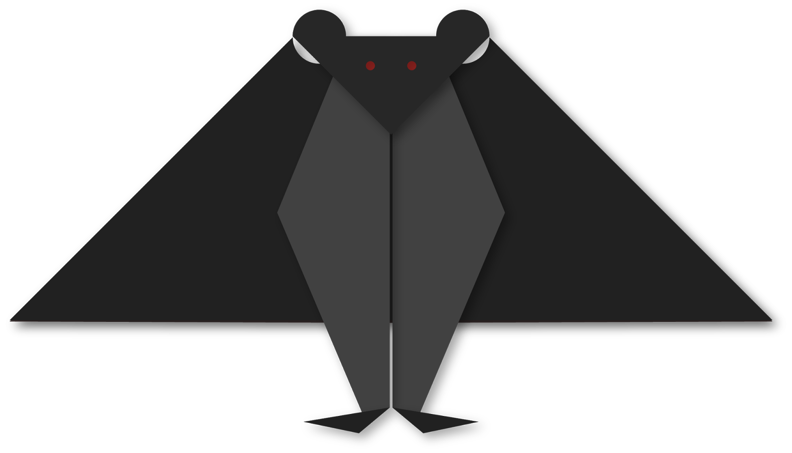

Interesting facts about Camel
- There are two types of camels: One humped or “dromedary” camels and two humped Bactrian camels.
- Camels have three sets of eyelids and two rows of eyelashes to keep sand out of their eyes.
- Camels have thick lips which let them forage for thorny plants other animals can't eat.

Interesting facts about Chameleon
- THEIR FEET WORK LIKE SALAD TONGS.
- ALMOST HALF OF ALL KNOWN SPECIES LIVE IN MADAGASCAR.
- CHAMELEONS VARY WILDLY IN TERMS OF SIZE
- THEY MAINLY CHANGE COLOR IN ORDER TO COMMUNICATE OR REGULATE BODY TEMPERATURE
- SKIN CRYSTALS ENABLE THEM TO CHANGE COLOR AT WILL.

Interesting facts about Cicada
- Cicadas can survive a huge fall as babies, or nymphs.
- The loud whirring or buzzing sound you hear is an all-male cicada chorus.
- They're true bugs (from the order Hemiptera).
- Females may be attracted to the sound of motors.
- Their short adult life is not unusual for bugs.

Interesting facts about Panda
- Giant pandas are good at climbing trees and can also swim.
- Pandas have so many fans because they look cute.
- An adult can eat 12–38 kilos of bamboo per day!
- Pandas go from pink to white and black (or brown).

Interesting facts about Pigeon
- Pigeons are incredibly complex and intelligent animals.
- Pigeons mate for life, and tend to raise two chicks at the same time.
- Both female and male pigeons share responsibility of caring for and raising young.
- Pigeons are renowned for their outstanding navigational abilities

Interesting facts about Teddy
- The term bear-hug was first recorded in 1846.
- In 1902 in Germany, Steiff launched “Bear 55 PB”, the first toy bear with jointed arms and legs.
- he Oxford English Dictionary dates the first use of the term teddy bear to 1906.
- The Teddy Bears' Picnic song was originally called The Teddy Bear Two Step.

Interesting facts about Frog
- Frogs absorb water through their skin so they don't need to drink.
- The eyes and nose of a frog are on top of its head so it can breathe and see when most of its body is under the water.
- Frogs have long back legs and webbed feet for jumping and swimming.
- Frogs can lay as many as 4,000 eggs in frogspawn.

Interesting facts about Bat
- There are over 1,400 species of bats worldwide.
- Bats have few natural predators -- disease is one of the biggest threat.
- Night insects have the most to fear from bats. Bats are the only flying mammal.
- Without bats, say goodbye to bananas, avocados and mangoes.